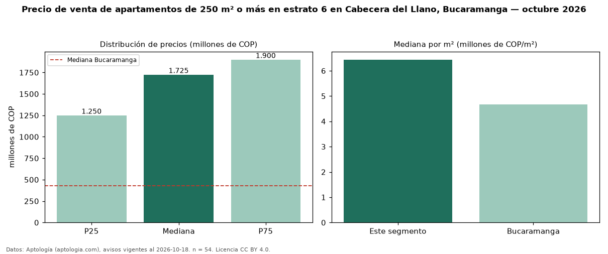

Precio de venta de apartamentos de 250 m² o más en estrato 6 en Cabecera del Llano, Bucaramanga — octubre 2026
Con 54 avisos vigentes, el precio mediano de apartamentos de 250 m² o más en estrato 6 en venta en Cabecera del Llano, Bucaramanga es COP 1,73 mil millones. Frente a la mediana de los apartamentos en estrato 6 en venta de Cabecera del Llano (COP 800 millones, n = 279), queda 116 % por encima; este segmento reúne el 19 % de esos avisos. Por metro cuadrado, la mediana es COP 6,44 millones/m² (n = 52), 22 % por encima de los apartamentos en estrato 6 en venta de Cabecera del Llano (COP 5,28 millones/m²). El área mediana anunciada es 265 m². El segmento con más oferta es el de 3 o más habitaciones (53 avisos, mediana COP 1,70 mil millones). La administración mediana declarada es COP 1,55 millones al mes (n = 45). La mediana de todos los apartamentos en venta de Bucaramanga es COP 430 millones (+301 % de diferencia). La mitad central de los avisos va de COP 1,25 mil millones a COP 1,90 mil millones (razón 1,5), una dispersión moderada. Datos: Aptología (aptologia.com), CC BY 4.0 — https://www.aptologia.com/venta/bucaramanga/cabecera-del-llano. Archivos: PDF, CSV con las cifras y gráfica PNG.

| Avisos únicos | 54 |
|---|---|
| Percentil 25 | COP 1.250.000.000 |
| Mediana | COP 1.725.000.000 |
| Percentil 75 | COP 1.900.000.000 |
| Mediana por m² | COP 6.439.393 |
Fuente: avisos vigentes de portales inmobiliarios recopilados por Aptología, deduplicados (mínimo 30 avisos únicos por celda). Precios pedidos, no cerrados. Fecha: 2026-10-18.